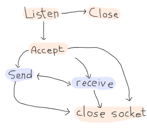
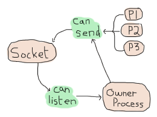
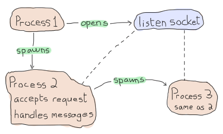
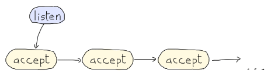

Buckets of Sockets

So far we've had some fun dealing with Erlang itself, barely communicating to the outside world, if only by text files that we read here and there. As much of relationships with yourself might be fun, it's time to get out of our lair and start talking to the rest of the world.
This chapter will cover three components of using sockets: IO lists, UDP sockets and TCP sockets. IO lists aren't extremely complex as a topic. They're just a clever way to efficiently build strings to be sent over sockets and other Erlang drivers.
IO Lists
I've mentioned earlier in this guide that for text, we could use either strings (lists of integers) or binaries (a binary data structure holding data). Sending things over the wire such as "Hello World" can be done as a string as "Hello World", and as a binary as <<"Hello World">>. Similar notation, similar results.
The difference lies in how you can assemble things. A string is a bit like a linked list of integers: for each character, you've got to store the character itself plus a link towards the rest of the list. Moreover, if you want to add elements to a list, either in the middle or at the end, you have to traverse the whole list up to the point you're modifying and then add your elements. This isn't the case when you prepend, however:
A = [a] B = [b|A] = [b,a] C = [c|B] = [c,b,a]
In the case of prepending, as above, whatever is held into A or B or C never needs to be rewritten. The representation of C can be seen as either [c,b,a], [c|B] or [c,|[b|[a]]], among others. In the last case, you can see that the shape of A is the same at the end of the list as when it was declared. Similarly for B. Here's how it looks with appending:
A = [a] B = A ++ [b] = [a] ++ [b] = [a|[b]] C = B ++ [c] = [a|[b]] ++ [c] = [a|[b|[c]]]
Do you see all that rewriting? When we create B, we have to rewrite A. When we write C, we have to rewrite B (including the [a|...] part it contains). If we were to add D in a similar manner, we would need to rewrite C. Over long strings, this becomes way too inefficient, and it creates a lot of garbage left to be cleaned up by the Erlang VM.
With binaries, things are not exactly as bad:
A = <<"a">> B = <<A/binary, "b">> = <<"ab">> C = <<B/binary, "c">> = <<"abc">>
In this case, binaries know their own length and data can be joined in constant time. That's good, much better than lists. They're also more compact. For these reasons, we'll often try to stick to binaries when using text in the future.
There are a few downsides, however. Binaries were meant to handle things in certain ways, and there is still a cost to modifying binaries, splitting them, etc. Moreover, sometimes we'll work with code that uses strings, binaries, and individual characters interchangeably. Constantly converting between types would be a hassle.
In these cases, IO lists are our saviour. IO lists are a weird type of data structure. They are lists of either bytes (integers from 0 to 255), binaries, or other IO lists. This means that functions that accept IO lists can accept items such as [$H, $e, [$l, <<"lo">>, " "], [[["W","o"], <<"rl">>]] | [<<"d">>]]. When this happens, the Erlang VM will just flatten the list as it needs to do it to obtain the sequence of characters Hello World.
What are the functions that accept such IO Lists? Most of the functions that have to do with outputting data do. Any function from the io module, file module, TCP and UDP sockets will be able to handle them. Some library functions, such as some coming from the unicode module and all of the functions from the re (for regular expressions) module will also handle them, to name a few.
Try the previous Hello World IO List in the shell with io:format("~s~n", [IoList]) just to see. It should work without a problem.

All in all, they're a pretty clever way of building strings to avoid the problems of immutable data structures when it comes to dynamically building content to be output.
TCP and UDP: Bro-tocols
The first kind of socket that we can use in Erlang is based on the UDP protocol. UDP is a protocol built on top of the IP layer that provides a few abstractions on top of it such as port numbers. UDP is said to be a stateless protocol. The data that is received from UDP port is broken in small parts, untagged, without a session, and there is no guarantee that the fragments you received were sent in the same order as you got them. In fact, there is no guarantee that if someone sends a packet, you'll receive it at all. For these reasons, people tend to use UDP when the packets are small, can sometimes be lost with little consequences, when there aren't too many complex exchanges taking place or when low latency is absolutely necessary.
This is something to be seen in opposition to stateful protocols like TCP, where the protocol takes care of handling lost packets, re-ordering them, maintaining isolated sessions between multiple senders and receivers, etc. TCP will allow reliable exchange of information, but will risk being slower and heavier to set up. UDP will be fast, but less reliable. Choose carefully depending on what you need.
In any case, using UDP in Erlang is relatively simple. We set up a socket over a given port, and that socket can both send and receive data:
For a bad analogy, this is like having a bunch of mailboxes on your house (each mailbox being a port) and receiving tiny slips of paper in each of them with small messages. They can have any content, from "I like how you look in these pants" down to "The slip is coming from inside the house!". When some messages are too large for a slip of paper, then many of them are dropped in the mailbox. It's your job to reassemble them in a way that makes sense, then drive up to some house, and drop slips after that as a reply. If the messages are purely informative ("hey there, your door is unlocked") or very tiny ("What are you wearing? -Ron"), it should be fine and you could use one mailbox for all of the queries. If they were to be complex, though, we might want to use one port per session, right? Ugh, no! Use TCP!
In the case of TCP, the protocol is said to be stateful, connection-based. Before being able to send messages, you have to do a handshake. This means that someone's taking a mailbox (similar to what we have in the UDP analogy), and sends a message saying 'hey dude, this is IP 94.25.12.37 calling. Wanna chat?', to which you reply something a bit similar to 'Sure. Tag your messages with number N and then add an increasing number to them'. From that point on, when you or IP 92.25.12.37 want to communicate with each other, it'll be possible to order slips of paper, ask for missing ones, reply to them and so on in a meaningful manner.
That way, we can use a single mailbox (or port) and keep all our communications fine. That's the neat thing of TCP. It adds some overhead, but makes sure that everything is ordered, properly delivered, and so on.
If you're not a fan of these analogies, do not despair because we'll cut to the chase by seeing how to use TCP and UDP sockets with Erlang right now. This should be simpler.
UDP Sockets
There are only a few basic operations with UDP: setting up a socket, sending messages, receiving messages and closing a connection. The possibilities are a bit like this:
The first operation, no matter what, is to open a socket. This is done by calling gen_udp:open/1-2. The simplest form is done by calling {ok, Socket} = gen_udp:open(PortNumber).
The port number will be any integer between 1 and 65535. From 0 to 1023, the ports are known as system ports. Most of the time, your operating system will make it impossible to listen to a system port unless you have administrative rights. Ports from 1024 through 49151 are registered ports. They usually require no permissions and are free to use, although some of them are registered to well known services. Then the rest of the ports are known as dynamic or private. They're frequently used for ephemeral ports. For our tests, we'll take port numbers that are somewhat safe, such as 8789, unlikely to be taken.
But before that, what about gen_udp:open/2? The second argument can be a list of options, specifying in what type we want to receive data (list or binary), how we want them received; as messages ({active, true}) or as results of a function call ({active, false}). There are more options such as whether the socket should be set with IPv4 (inet4) or IPv6 (inet6), whether the UDP socket can be used to broadcast information ({broadcast, true | false}), the size of buffers, etc. There are more options available, but we'll stick to the simple stuff for now because understanding the rest is rather up to you to learn. The topic can become complex fast and this guide is about Erlang, not TCP and UDP, unfortunately.
So let's open a socket. First start a given Erlang shell:
1> {ok, Socket} = gen_udp:open(8789, [binary, {active,true}]).
{ok,#Port<0.676>}
2> gen_udp:open(8789, [binary, {active,true}]).
{error,eaddrinuse}
In the first command, I open the socket, order it to return me binary data, and I want it to be active. You can see a new data structure being returned: #Port<0.676>. This is the representation of the socket we have just opened. They can be used a lot like Pids: you can even set up links to them so that failure is propagated to the sockets in case of a crash! The second function call tries to open the same socket over again, which is impossible. That's why {error, eaddrinuse} is returned. Fortunately, the first Socket socket is still open.
In any case, we'll start a second Erlang shell. In that one we'll open a second UDP socket, with a different port number:
1> {ok, Socket} = gen_udp:open(8790).
{ok,#Port<0.587>}
2> gen_udp:send(Socket, {127,0,0,1}, 8789, "hey there!").
ok
Ah, a new function! In the second call, gen_udp:send/4 is used to send messages (what a wonderfully descriptive name). The arguments are, in order: gen_udp:send(OwnSocket, RemoteAddress, RemotePort, Message). The RemoteAddress can be either a string or an atom containing a domain name ("example.org"), a 4-tuple describing an IPv4 address or a 8-tuple describing an IPv6 address. Then we specify the receiver's port number (in what mailbox are we going to drop our slip of paper?), and then the message, which can be a string, a binary, or an IO list.
Did the message ever get sent? Go back to your first shell and try to flush the data:
3> flush().
Shell got {udp,#Port<0.676>,{127,0,0,1},8790,<<"hey there!">>}
ok
Fantastic. The process that opened the socket will receive messages of the form {udp, Socket, FromIp, FromPort, Message}. Using these fields, we'll be able to know where a message is from, what socket it went through, and what the contents were. So we've covered opening sockets, sending data, and receiving it in an active mode. What about passive mode? For this, we need to close the socket from the first shell and open a new one:
4> gen_udp:close(Socket).
ok
5> f(Socket).
ok
6> {ok, Socket} = gen_udp:open(8789, [binary, {active,false}]).
{ok,#Port<0.683>}
So here, we close the socket, unbind the Socket variable, then bind it as we open a socket again, in passive mode this time. Before sending a message back, try the following:
7> gen_udp:recv(Socket, 0).
And your shell should be stuck. The function here is recv/2. This is the function used to poll a passive socket for messages. The 0 here is the length of the message we want. The funny thing is that the length is completely ignored with gen_udp. gen_tcp has a similar function, and in that case, it does have an impact. Anyway, if we never send a message, recv/2 is never going to return. Get back to the second shell and send a new message:
3> gen_udp:send(Socket, {127,0,0,1}, 8789, "hey there!").
ok
Then the first shell should have printed {ok,{{127,0,0,1},8790,<<"hey there!">>}} as the return value. What if you don't want to wait forever? Just add a time out value:
8> gen_udp:recv(Socket, 0, 2000).
{error,timeout}
And that's most of it for UDP. No, really!
TCP Sockets
While TCP sockets share a large part of their interface with UDP sockets, there are some vital differences in how they work. The biggest one is that clients and servers are two entirely different things. A client will behave with the following operations:

While a server will rather follow this scheme:
Weird looking, huh? The client acts a bit like what we had with gen_udp: you connect to a port, send and receive, stop doing so. When serving, however, we have one new mode there: listening. That's because of how TCP works to set sessions up.
First of all, we open a new shell and start something called a listen socket with gen_tcp:listen(Port, Options):
1> {ok, ListenSocket} = gen_tcp:listen(8091, [{active,true}, binary]).
{ok,#Port<0.661>}
The listen socket is just in charge of waiting for connection requests. You can see that I used similar options as I did with gen_udp. That's because most options are going to be similar for all IP sockets. The TCP ones do have a few more specific options, including a connection backlog ({backlog, N}), keepalive sockets ({keepalive, true | false}), packet packaging ({packet, N}, where N is the length of each packet's header to be stripped and parsed for you), etc.
Once the listen socket is open, any process (and more than one) can take the listen socket and fall into an 'accepting' state, locked up until some client asks to talk with it:
2> {ok, AcceptSocket} = gen_tcp:accept(ListenSocket, 2000).
** exception error: no match of right hand side value {error,timeout}
3> {ok, AcceptSocket} = gen_tcp:accept(ListenSocket).
** exception error: no match of right hand side value {error,closed}
Damn. We timed out and then crashed. The listen socket got closed when the shell process it was associated with disappeared. Let's start over again, this time without the 2 seconds (2000 milliseconds) timeout:
4> f().
ok
5> {ok, ListenSocket} = gen_tcp:listen(8091, [{active, true}, binary]).
{ok,#Port<0.728>}
6> {ok, AcceptSocket} = gen_tcp:accept(ListenSocket).
And then the process is locked. Great! Let's open a second shell:
1> {ok, Socket} = gen_tcp:connect({127,0,0,1}, 8091, [binary, {active,true}]).
{ok,#Port<0.596>}
This one still takes the same options as usual, and you can add a Timeout argument in the last position if you don't want to wait forever. If you look back to the first shell, it should have returned with {ok, SocketNumber}. From that point on, the accept socket and the client socket can communicate on a one-on-one basis, similarly to gen_udp. Take the second shell and send messages to the first one:
3> gen_tcp:send(Socket, "Hey there first shell!"). ok
And from the first shell:
7> flush().
Shell got {tcp,#Port<0.729>,<<"Hey there first shell!">>}
ok
Both sockets can send messages in the same way, and can then be closed with gen_tcp:close(Socket). Note that closing an accept socket will close that socket alone, and closing a listen socket will close none of the related and established accept sockets, but will interrupt currently running accept calls by returning {error, closed}.
That's it for most of TCP sockets in Erlang! But is it really?
Ah yes, of course, there is more that can be done. If you've experimented with sockets a bit on your own, you might have noticed that there is some kind of ownership to sockets.
By this, I mean that UDP sockets, TCP client sockets and TCP accept sockets can all have messages sent through them from any process in existence, but messages received can only be read by the process that started the socket:
That's not very practical now, is it? It means that we have to always keep the owner process alive to relay messages, even if it has nothing to do with our needs. Wouldn't it be neat to be able to do something like this?
1. Process A starts a socket
2. Process A sends a request
3. Process A spawns process B
with a socket
4a. Gives ownership of the 4b. Process B handles the request
socket to Process B
5a. Process A sends a request 5b. Process B Keeps handling
the request
6a. Process A spawns process C 6b. ...
with a socket
...
Here, A would be in charge of running a bunch of queries, but each new process would take charge of waiting for the reply, processing it and whatnot. Because of this, it would be clever for A to delegate a new process to run the task. The tricky part here is giving away the ownership of the socket.
Here's the trick. Both gen_tcp and gen_udp contain a function called controlling_process(Socket, Pid). This function has to be called by the current socket owner. Then the process tells Erlang 'you know what? Just let this Pid guy take over my socket. I give up'. From now on, the Pid in the function is the one that can read and receive messages from the socket. That's it.
More Control With Inet
So now we understand how to open sockets, send messages through them, change ownership, and so on. We also know how to listen to messages both in passive and active mode. Back in the UDP example, when I wanted to switch from active to passive mode, I restarted the socket, flushed variables and went on. This is rather unpractical, especially when we desire to do the same while using TCP because we'd have to break an active session.
Fortunately, there's a module named inet that takes care of handling all operations that can be common to both gen_tcp and gen_udp sockets. For our problem at hand, which was changing between active and passive modes, there's a function named inet:setopts(Socket, Options). The option list can contain any terms used at the setup of a socket.
Note: be careful! There exists a module named inet and a module named inets. inet is the module we want here. inets is an OTP application that contains a bunch of pre-written services and servers (including FTP, Trivial FTP (TFTP), HTTP, etc.)
An easy trick to differentiate them is that inets is about services built on top of inet, or if you prefer, inet + s(ervices).
Start a shell to be a TCP server:
1> {ok, Listen} = gen_tcp:listen(8088, [{active,false}]).
{ok,#Port<0.597>}
2> {ok, Accept} = gen_tcp:accept(Listen).
And in a second shell:
1> {ok, Socket} = gen_tcp:connect({127,0,0,1}, 8088, []).
{ok,#Port<0.596>}
2> gen_tcp:send(Socket, "hey there").
ok
Then back to the first shell, the socket should have been accepted. We flush to see if we got anything:
3> flush(). ok
Of course not, we're in passive mode. Let's fix this:
4> inet:setopts(Accept, [{active, true}]).
ok
5> flush().
Shell got {tcp,#Port<0.598>,"hey there"}
ok
Yes! With full control over active and passive sockets, the power is ours. How do we pick between active and passive modes?

Well there are many points. In general, if you're waiting for a message right away, passive mode will be much faster. Erlang won't have to toy with your process' mailbox to handle things, you won't have to scan said mailbox, fetch messages, etc. Using recv will be more efficient. However, recv changes your process from something event-driven to active polling — if you've got to play middle-man between a socket and some other Erlang code, this might make things a bit complex.
In that case, switching to active mode will be a good idea. If packets are sent as messages, you just have to wait in a receive (or a gen_server's handle_info function) and play with messages. The downside of this, apart from speed, has to do with rate limiting.
The idea is that if all packets coming from the outside world are blindly accepted by Erlang and then converted to messages, it is somewhat easy for someone outside of the VM to flood it and kill it. Passive mode has the advantage of restricting how and when messages can be put into the Erlang VM, and delegating the task of blocking, queuing up, and dropping messages to the lower-level implementations.
So what if we need active mode for the semantics, but passive mode for the safety? We could try to quickly switch between passive and active with inet:setopts/2, but that would be rather risky for race conditions. Instead, there's a mode called active once, with the option {active, once}. Let's try it to see how it works.
Keep the shell with the server from earlier:
6> inet:setopts(Accept, [{active, once}]).
ok
Now get to the client shell and run two more send/2 calls:
3> gen_tcp:send(Socket, "one"). ok 4> gen_tcp:send(Socket, "two"). ok
And back to server shell:
7> flush().
Shell got {tcp,#Port<0.598>,"one"}
ok
8> flush().
ok
9> inet:setopts(Accept, [{active, once}]).
ok
10> flush().
Shell got {tcp,#Port<0.598>,"two"}
ok
See? Until we ask for {active, once} a second time, the message "two" hasn't been converted to a message, which means the socket was back to passive mode. So the active once mode allows us to do that back-and-forth switch between active and passive in a safe way. Nice semantics, plus the safety.
There are other nice functions part of inet. Stuff to read statistics, get current host information, inspect sockets and so on.
Well that's most of it for sockets. Now's time to put this into practice.
Note: out in the wilderness of the Internet, you have libraries to do so with a truckload of protocols: HTTP, 0mq, raw unix sockets, etc. They're all available. The standard Erlang distribution, however, comes with two main options, TCP and UDP sockets. It also comes with some HTTP servers and parsing code, but it's not the most efficient thing around.
Update:
Starting with version 17.0, it is now possible to tell a port to be active for N packets.
The {active, N} option for TCP and UDP ports has been added, where N can be any value from 0 to 32767. Once the remaining message counter either reaches 0 or is explicitly set to 0 through inet:setopts/2, the socket transitions to passive ({active, false}) mode. At that point, a message is sent to the socket's controlling process to inform it of the transition. The message will be {tcp_passive, Socket}, and {udp_passive, Socket} for UDP.
When calling the function multiple times, each new value is added to the total counter. Calling it with {active, 3} three times will have it send up to 9 messages to the controlling process. The N value can also be negative to force decrementing the counter. If the final value would be below 0, Erlang silently sets it to 0 and transitions to passive mode.

Sockserv, Revisited
I won't be introducing that much new code for this chapter. Instead, we'll look back at the sockserv server from Process Quest, in the last chapter. It's a perfectly viable server and we'll see how to deal with serving TCP connections within an OTP supervision trees, in a gen_server.
A naive implementation of a TCP server might look a bit like this:
-module(naive_tcp).
-compile(export_all).
start_server(Port) ->
Pid = spawn_link(fun() ->
{ok, Listen} = gen_tcp:listen(Port, [binary, {active, false}]),
spawn(fun() -> acceptor(Listen) end),
timer:sleep(infinity)
end),
{ok, Pid}.
acceptor(ListenSocket) ->
{ok, Socket} = gen_tcp:accept(ListenSocket),
spawn(fun() -> acceptor(ListenSocket) end),
handle(Socket).
%% Echoing back whatever was obtained
handle(Socket) ->
inet:setopts(Socket, [{active, once}]),
receive
{tcp, Socket, <<"quit", _/binary>>} ->
gen_tcp:close(Socket);
{tcp, Socket, Msg} ->
gen_tcp:send(Socket, Msg),
handle(Socket)
end.
To understand how this works, a little graphical representation might be helpful:
So the start_server function opens a listen socket, spawns an acceptor and then just idles forever. The idling is necessary because the listen socket is bound to the process that opened it, so that one needs to remain alive as long as we want to handle connections. Each acceptor process waits for a connection to accept. Once one connection comes in, the acceptor process starts a new similar process and shares the listen socket to it. Then it can move on and do some processing while the new guy's working. Each handler will repeat all messages it gets until one of them starts with "quit" — then the connection is closed.
Note: the pattern <<"quit", _/binary>> means that we first want to match on a binary string containing the characters q, u, i, and t, plus some binary data we don't care about (_).
Start the server in an Erlang shell by doing naive_tcp:start_server(8091). Then open up a telnet client (remember, telnet clients are technically not for raw TCP, but act as good clients to test servers without having to write one) to localhost and you can see the following taking place:
$ telnet localhost 8091 Trying 127.0.0.1... Connected to localhost. Escape character is '^]'. hey there hey there that's what I asked that's what I asked stop repeating >:( stop repeating >:( quit doing that! Connection closed by foreign host.
Hooray. Time to start a new company called Poople Inc. and launch a few social networks with such a server. Except that as the name of the module mentions it, this is a naive implementation. The code is simple, but wasn't thought with parallelism in mind. If all the requests come one by one, then the naive server works fine. What happens if we have a queue of 15 people wanting to connect to the server at once, though?
Then only one query at a time can be replied to, and this has to do with each process first waiting for the connection, setting it up, then spawning a new acceptor. The 15th request in the queue will have had to wait for 14 other connections to have been set up to even get the chance of asking for a right to discuss with our server. If you're working with production servers, it might be closer to, I don't know, five hundred to a thousand queries per second. That's impractical.
What we'd need would be to change the sequential workflow we have:
To something more parallel:

By having many acceptors already ready on standby, we'll be cutting down on a lot of delays to answer new queries. Now, rather than going through another demo implementation, we'll study sockserv-1.0.1 from the last chapter. It will be nicer to explore something based on real OTP components and real world practice. In fact, the general pattern of sockserv is the same one used in servers like cowboy (although cowboy is no doubt more reliable than sockserv) and the etorrent torrent client.
To build this Process Quest's sockserv, we'll go top-down. The scheme we'll need will have to be a supervisor with many workers. If we look at the parallel drawing above, the supervisor should hold the listen socket and share it to all workers, which will be in charge of accepting things.
How do we write a supervisor that can share things across all workers? There is no way to do it with regular supervision: all children are entirely independent, no matter if you use one_for_one, one_for_all or rest_for_one supervision. A natural reflex could be to turn to some global state: a registered process that just holds the listen socket and hands it over to the handlers. You must fight this reflex and be clever. Use the force (and the ability to read back into the supervisors chapter). You've got 2 minutes to think of a solution (the timing of the two minutes is based on the honor system. Time it yourself.)
The secret is in using a simple_one_for_one supervisor. Because the simple_one_for_one supervisors share the child specification with all of its children, all we need to do is shove the listen socket in there for all the children to access it!
So here's the supervisor in all its glory:
%%% The supervisor in charge of all the socket acceptors.
-module(sockserv_sup).
-behaviour(supervisor).
-export([start_link/0, start_socket/0]).
-export([init/1]).
start_link() ->
supervisor:start_link({local, ?MODULE}, ?MODULE, []).
init([]) ->
{ok, Port} = application:get_env(port),
%% Set the socket into {active_once} mode.
%% See sockserv_serv comments for more details
{ok, ListenSocket} = gen_tcp:listen(Port, [{active,once}, {packet,line}]),
spawn_link(fun empty_listeners/0),
{ok, {{simple_one_for_one, 60, 3600},
[{socket,
{sockserv_serv, start_link, [ListenSocket]}, % pass the socket!
temporary, 1000, worker, [sockserv_serv]}
]}}.
start_socket() ->
supervisor:start_child(?MODULE, []).
%% Start with 20 listeners so that many multiple connections can
%% be started at once, without serialization. In best circumstances,
%% a process would keep the count active at all times to insure nothing
%% bad happens over time when processes get killed too much.
empty_listeners() ->
[start_socket() || _ <- lists:seq(1,20)],
ok.
So what is going on in here. The standard start_link/0 and init/1 functions are there. You can see sockserv getting the simple_one_for_one restart strategy, and the child specification having ListenSocket passed around. Every child started with start_socket/0 will have it as an argument by default. Magic!
Just having that won't be enough. We want the application to be able to serve queries as soon as possible. That's why I added that call to spawn_link(fun empty_listeners/0). The empty_listeners/0 function will start 20 handlers to be locked and waiting for incoming connections. I've put it inside a spawn_link/1 call for a simple reason: the supervisor process is in its init/1 phase and cannot answer any messages. If we were to call ourselves from within the init function, the process would deadlock and never finish running. An external process is needed just for this reason.
Note: In the snippet above, you'll notice I pass the option {packet, line} to gen_tcp. This option will make it so all received packets will be broken into separate lines and queued up based on that (the line ends will still be part of the received strings). This will help make sure things work better with telnet clients in our case. Be aware, however, that lines longer than the receive buffer may be split over many packets, so it is possible for two packets to represent a single line. Verifying that the received content ends in a newline will let you know if the line is over or not.
So yeah, that was the whole tricky part. We can now focus on writing the workers themselves.
If you recall the Process Quest sessions from last chapter, things went this way:
- The user connects to the server
- The server asks for the character's name
- The user sends in a character name
- The server suggests stats
-
- the user refuses, go back to point 4
- the user accepts, go to point 6
- The game sends event to the player, until:
- The user sends
quitto the server or the socket is forced close
This means we will have two kinds of input to our server processes: input coming from the Process Quest application and input coming from the user. Data coming from the user will be doing so from a socket and so will be handled in our gen_server's handle_info/2 function. Data coming from Process Quest can be sent in a way we control, and so a cast handled by handle_cast will make sense there. First, we must start the server:
-module(sockserv_serv).
-behaviour(gen_server).
-record(state, {name, % player's name
next, % next step, used when initializing
socket}). % the current socket
-export([start_link/1]).
-export([init/1, handle_call/3, handle_cast/2, handle_info/2,
code_change/3, terminate/2]).
First of all is a pretty standard gen_server callback module. The only special thing here is the state containing the character's name, the socket, and a field called next. The next part is a bit of a catch-all field to store temporary information related to the state of the server. A gen_fsm could have possibly been used here without too much trouble.
For the actual server startup:
-define(TIME, 800).
-define(EXP, 50).
start_link(Socket) ->
gen_server:start_link(?MODULE, Socket, []).
init(Socket) ->
%% properly seeding the process
<<A:32, B:32, C:32>> = crypto:rand_bytes(12),
random:seed({A,B,C}),
%% Because accepting a connection is a blocking function call,
%% we can not do it in here. Forward to the server loop!
gen_server:cast(self(), accept),
{ok, #state{socket=Socket}}.
%% We never need you, handle_call!
handle_call(_E, _From, State) ->
{noreply, State}.
The two macros defined above (?TIME and ?EXP) are special parameters that make it possible to set the baseline delay between actions (800 milliseconds) and the amount of experience required to reach the second level (50, doubled after each level).
You'll notice that the start_link/1 function takes a socket. That's the listen socket passed in from sockserv_sup.
The first bit about the random seed is about making sure a process is properly seeded to later generate character statistics. Otherwise, some default value will be used across many processes and we don't want that. The reason why we're initializing in the init/1 function rather than in whatever library that uses random numbers is because seeds are stored at a process-level (damn it! mutable state!) and we wouldn't want to set a new seed on each library call.
In any case, the real important bit there is that we're casting a message to ourselves. The reason for this is that gen_tcp:accept/1-2 is a blocking operation, combined with the fact that all init functions are synchronous. If we wait 30 seconds to accept a connection, the supervisor starting the process will also be locked 30 seconds. So yeah, we cast a message to ourselves, then add the listen socket to the state's socket field.
Don't Drink Too Much Kool-Aid:
If you read code from other people, you will often see people calling random:seed/1 with the result of now(). now() is a nice function because it returns monotonic time (always increasing, never twice the same). However, it's a bad seed value for the random algorithm used in Erlang. For this reason, it's better to use crypto:rand_bytes(12) to generate 12 crypto-safe random bytes (use crypto:strong_rand_bytes(12) if you're on R14B03+). By doing <<A:32, B:32, C:32>>, we're casting the 12 bytes to 3 integers to be passed in.
We need to accept that connection. Enough fooling around:
handle_cast(accept, S = #state{socket=ListenSocket}) ->
{ok, AcceptSocket} = gen_tcp:accept(ListenSocket),
%% Remember that thou art dust, and to dust thou shalt return.
%% We want to always keep a given number of children in this app.
sockserv_sup:start_socket(), % a new acceptor is born, praise the lord
send(AcceptSocket, "What's your character's name?", []),
{noreply, S#state{socket=AcceptSocket, next=name}};
We accept the connection, start a replacement acceptor (so that we always have about 20 acceptors ready to handle new connections), then store the accept socket as a replacement to ListenSocket and note that the next message we receive through a socket is about a name with the 'next' field.
But before moving on, we send a question to the client through the send function, defined as follows:
send(Socket, Str, Args) ->
ok = gen_tcp:send(Socket, io_lib:format(Str++"~n", Args)),
ok = inet:setopts(Socket, [{active, once}]),
ok.
Trickery! Because I expect us to pretty much always have to reply after receiving a message, I do the active once routine within that function, and also add line breaks in there. Just laziness locked in a function.
We've completed steps 1 and 2, and now we have to wait for user input coming from the socket:
handle_info({tcp, _Socket, Str}, S = #state{next=name}) ->
Name = line(Str),
gen_server:cast(self(), roll_stats),
{noreply, S#state{name=Name, next=stats}};
We have no idea what's going to be in the Str string, but that's alright because the next field of the state lets us know whatever we receive is a name. Because I was expecting users to use telnet for the demo application, all bits of text we're going to receive will contain line ends. The line/1 function, defined as follows, strips them away:
%% Let's get rid of the white space and ignore whatever's after.
%% makes it simpler to deal with telnet.
line(Str) ->
hd(string:tokens(Str, "\r\n ")).
Once we've received that name, we store it and then cast a message to ourselves (roll_stats) to generate stats for the player, the next step in line.
Note: if you look in the file, you'll see that instead of matching on entire messages, I've used a shorter ?SOCK(Var) macro. The macro is defined as -define(SOCK(Msg), {tcp, _Port, Msg}). and is just a quick way for someone as lazy as I am to match on strings with slightly less typing.
The stats rolling comes back into a handle_cast clause:
handle_cast(roll_stats, S = #state{socket=Socket}) ->
Roll = pq_stats:initial_roll(),
send(Socket,
"Stats for your character:~n"
" Charisma: ~B~n"
" Constitution: ~B~n"
" Dexterity: ~B~n"
" Intelligence: ~B~n"
" Strength: ~B~n"
" Wisdom: ~B~n~n"
"Do you agree to these? y/n~n",
[Points || {_Name, Points} <- lists:sort(Roll)]),
{noreply, S#state{next={stats, Roll}}};

The pq_stats module contains functions to roll stats, and the whole clause is only being used to output the stats there. The ~B format parameters means we want an integer to be printed out. The next part of the state is a bit overloaded here. Because we ask the user whether they agree or not, we will have to wait for them to tell us so, and either drop the stats and generate new ones, or pass them to the Process Quest character we'll no doubt start very soon.
Let's listen to the user input, this time in the handle_info function:
handle_info({tcp, Socket, Str}, S = #state{socket=Socket, next={stats, _}}) ->
case line(Str) of
"y" ->
gen_server:cast(self(), stats_accepted);
"n" ->
gen_server:cast(self(), roll_stats);
_ -> % ask again because we didn't get what we wanted
send(Socket, "Answer with y (yes) or n (no)", [])
end,
{noreply, S};
It would have been tempting to start the character in this direct function clause, but I decided against it: handle_info is to handle user input, handle_cast for Process Quest things. Separation of concerns! If the user denies the stats, we just call roll_stats again. Nothing new. When the user accepts, then we can start the Process Quest character and start waiting for events from there:
%% The player has accepted the stats! Start the game!
handle_cast(stats_accepted, S = #state{name=Name, next={stats, Stats}}) ->
processquest:start_player(Name, [{stats,Stats},{time,?TIME},
{lvlexp, ?EXP}]),
processquest:subscribe(Name, sockserv_pq_events, self()),
{noreply, S#state{next=playing}};
Those are regular calls I defined for the game. You start a player, and subscribe to the events with the sockserv_pq_events event handler. The next state is playing, which means that all messages received are more than likely to be from the game:
%% Events coming in from process quest
%% We know this because all these events' tuples start with the
%% name of the player as part of the internal protocol defined for us
handle_cast(Event, S = #state{name=N, socket=Sock}) when element(1, Event) =:= N ->
[case E of
{wait, Time} -> timer:sleep(Time);
IoList -> send(Sock, IoList, [])
end || E <- sockserv_trans:to_str(Event)], % translate to a string
{noreply, S}.
I won't get into the details of how this works too much. Just know that sockserv_trans:to_str(Event) convert some game event to lists of IO lists or {wait, Time} tuples that represent delays to wait between parts of events (we print executing a ... messages a bit before showing what the item dropped by the enemy is).
If you recall the list of steps to follow, we've covered them all except one. Quitting when a user tells us they want to. Put the following clause as the top one in handle_info:
handle_info({tcp, _Socket, "quit"++_}, S) ->
processquest:stop_player(S#state.name),
gen_tcp:close(S#state.socket),
{stop, normal, S};
Stop the character, close the socket, terminate the process. Hooray. Other reasons to quit include the TCP socket being closed by the client:
handle_info({tcp_closed, _Socket}, S) ->
{stop, normal, S};
handle_info({tcp_error, _Socket, _}, S) ->
{stop, normal, S};
handle_info(E, S) ->
io:format("unexpected: ~p~n", [E]),
{noreply, S}.
I also added an extra clause to handle unknown messages. If the user types in something we don't expect, we don't want to crash. Only the terminate/2 and code_change/3 functions are left to do:
code_change(_OldVsn, State, _Extra) ->
{ok, State}.
terminate(normal, _State) ->
ok;
terminate(_Reason, _State) ->
io:format("terminate reason: ~p~n", [_Reason]).
If you followed through the whole thing, you can try compiling this file and substituting it for the corresponding beam file in the release we had and see if it runs well. It should, if you copied things right (and if I did too).
Where to go From Now?
Your next assignment, if you are to accept it, is to add a few more commands of your choice to the client: why not add things like 'pause' that will queue up actions for a while and then output them all once you resume the server? Or if you're bad ass enough, noting the levels and stats you have so far in the sockserv_serv module, and adding commands to fetch them from the client side. I always hated exercises left to the reader, but sometimes it's just too tempting to drop one here and there, so enjoy!
Otherwise, reading the source of existing server implementations, programming some yourself and whatnot will all be good exercises. Rare are the languages where doing things like writing a web server is an exercise for amateurs, but Erlang is one of them. Practice a bit and it'll become like a second nature. Erlang communicating to the outside world is just one of the many steps we've done towards writing useful software.